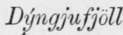
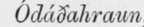

Prefatory. Part 4
Description
This section is from the book "Askja: Iceland's Largest Volcano", by W. G. Lock. Also available from Amazon: Askja: Iceland's Largest Volcano.
Prefatory. Part 4
To return to Burton, and his work. To judge from the gallant Captain's two bulky volumes he had drifted to the ultima Thule of literature, compilation; the bourne, alas! too frequently, of those afflicted with cacoéthes scribendi, when, as in this instance, they lack the energy to push into virtually unexplored regions, even when standing upon the very threshold. Whether Sir H. C. Bawlinson intended to be ironical or not, when at a meeting of the Boyal Geographical Society he made the following comment upon Captain Burton's book on Iceland, he was exquisitely so: ' the well-known encyclopaedic tastes and acquirements of the author enabling hiin in addition to the narrative ot his journey to bring together a mass of information'! Truly, choice of words is everything! It being proverbial that encyclopaedias are invariably a century behind the age, it is not to be wondered at that amongst the ' mass of information' brought together by Burton, there was only the following about a volcano that was active while his work was in the press, and the ' ubiquitous' Captain within a two days' ride of it: 'I wonder also how that queer elongated horse-shoe farther south, the "Askja" or "Dyngjufjoll bin SySri" came to be laid out; but my knowledge of the ground does not allow me to correct the shape,' and, in the form of a footnote, a letter which went the round of the papers, stating that the eruption in January had taken place in the Skaptdr Jokull. After one failure to ' plant a lance in Iceland ' by ascending the mountain named Herofubre$, the ' veteran traveller' appears to have rested content with the laurels won in sunnier lands, for he did not again venture into ' the unknown region to the south,' as he himself terms the interior south of Myvatn.
It may be observed of Iceland that it is a country much written about but very little described; as notwithstanding there have been to my knowledge six books, besides the two criticised, published since the 1875 eruptions and a number of magazine articles, hardly a word is penned by any one save Wight and Watts, respecting the volcanic vents active in the winter and spring of that year. Although this appears strange at first sight, it ceases to be so when one bears in mind that the majority of the writers made but a two days' excursion inland to the Getjsir, or confined themselves to other well-beaten and often before described tracks, diving-pretty deeply, too, some of them, to obtain matter for a volume or an article-into the pages of Hooker, Henderson, and other antiquated authorities for information respecting the eruptions and volcanic vents of Iceland, totally oblivious of, or ignoring the fact that volcanic eruptions take place in the island once or oftener in every decade (since 1821 thirteen eruptions are recorded, besides a number of earthquakes), not infrequently at spots where an eruption has never taken place before, or at least in historical times; f.e. the Myvatns Orsefi in 1875. One author brought out a work of close upon 300 pages, after having been ten days on the island, during which lengthy sojourn he safely performed the perilous journey inland as far as the Gey sir, distant two days' easy ride from the capital!
In addition to the above comments upon the recent works on Iceland, I feel it incumbent upon me to repeat, that I think English scientists of late years have greatly neglected the volcanic vents of this island, and to observe that it is not over creditable to the Fellows of our Geological Society that not one has followed in the footsteps of Mr. Watts, after the Eoyal Geographical Society making known through its journal the existence of a vast active volcano in the interior of Iceland, which promised, if examined by competent geologists, to throw considerable light not only upon the volcanic system of that island, but also of Europe ; it being well known that most of the great European earthquakes and volcanic disturbances have been either followed or preceded by terrific eruptions in Iceland. As it is, English scientists have rested content with the description of the volcano furnished by Mr. Watts, and, as a rule, utterly ignore its existence, and continue, year after year, to treat Hekla as the most important of the Icelandic volcanoes; whereas, to judge by the ' lay' of most of the lava-floods around Hekla, they do not appear to have flowed from that volcano, or even from rifts radiating from the volcanic vent of that mountain, but to have issued from rifts above a subterranean channel, which-if such exists and runs in the direction S.W. to N.E., indicated by the ' lay' of the lava-would intersect the Askja crater, and be in all probability connected therewith.
Upon my return in the autumn of 1880 after passing two summers in Iceland, during which I crossed the Oddcfahraun to Askja twice, I forwarded to the Eoyal Geographical Society the paper published in August last. It was impossible within the limits of a short paper to do justice to a volcano that has played a very conspicuous part in the formation of Iceland, and therefore I resolved to bring out the present work. I have spent considerable time and money, and spared no pains to make this monograph as complete as possible, venturing, as before said, across the great lava desert twice, besides devoting a considerable amount of time to the construction of a map of Iceland on a far larger scale than has hitherto been published in England, which shows every recorded site of volcanic disturbance and a number of places famous in Edda and in Saga.
I was greatly assisted in the construction of my map, and in my explorations upon my second visit to the volcano, by a small map of Askja and a tract of the Myvatns Or&fi by Lieut, (now Captain) Caroc, of the Danish Navy, who accompanied Professor Johnstrup to Askja; and as some slight return for the assistance, I will bring this somewhat discursive prefatory chapter to a conclusion by doing an act of justice to the Lieutenant, who is in danger of losing the credit of having made this survey. In 1844 a map of Iceland by an Icelandic cartographer, Björn Gunnlaugsson, was published in Copenhagen, and last year a reprint was issued by the Icelandic Literary Society, giving the , and the other orological features of the , from the survey made by Lieut.
Caroc in 1876, without the fact being stated, the map appearing wholly as the work of Gunnlaugsson; upon whose original map Askja is wrongly shown as an elongated oval space-the 'elongated horse-shoe' of Burton-environed within a narrow mountain wall having an opening to the N.N.E., and otherwise unbroken. "When Gunnlaugsson in the summer of 1837 made an attempt to survey this portion of the interior, he was forced by fogs and snowstorms to abandon his project, and it was with the utmost difficulty his party succeeded in making their way back to a farm; and, although it is asserted that he made another and successful attempt the following year, I ain inclined to doubt if be ever visited the mountains in the Oddtfahraun, for if he had I feel certain from the general accuracy of his map, that the orological features of this desert would have been more correctly delineated than they are. Therefore the honour of having been the ilrst man to map out the Askja crater unquestionably belongs to Lieut. Caroc, who executed his task in spite of almost insurmountable difficulties; a snowstorm in Lat. 65° N., at an altitude of close upon 4,000 feet, would have daunted most men, especially as it lasted for thirty-six hours, but Caroc finished his survey of the crater in spite of it, though he was compelled to abandon the survey of the outer circumference of the mountain.
With reference to- the Byngjufjoll and Askja, as traced by Mr. Watts upon the large map of Iceland belonging to the Eoyal Geographical Society, they there appear as a modification of Gunnlaugsson's elongated oval, with the encircling mountain wall wrongly broken up into sections, there being, as will be seen by the map attached to this volume, but two gaps to the level of the lava-covered floor of Askja.
Upon the map attached to this work Askja is shown from Lieut. Caroc's survey, with some not unimportant additions by myself as to the features of the mountain in which this crater is embosomed.
Without further prefatory remark, I will now proceed to describe my journey in the summer of 1880 to the volcano, visiting en route, the rifts and lava-beds in the Myvatns Orsefi, and the nature of the eruptions at both places in 1875.
Continue to: